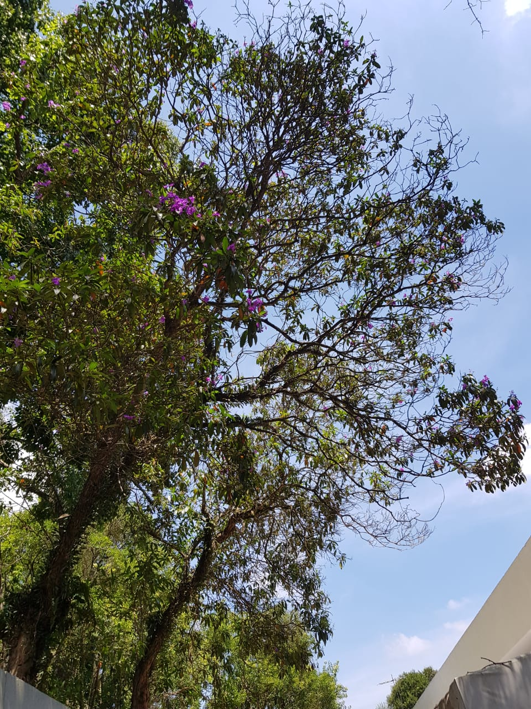
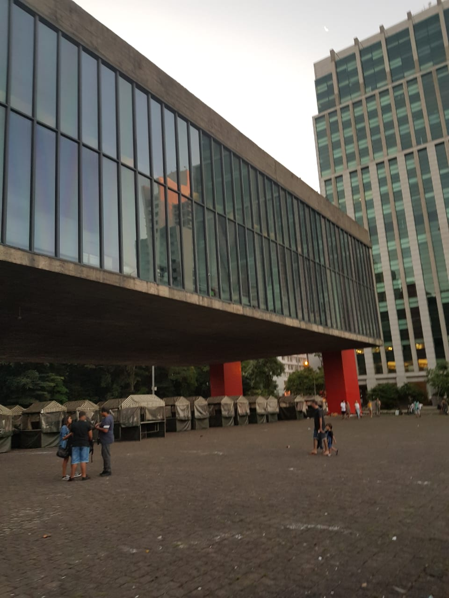

Liberdade Essa foto foi quando e e meus amigos fomos para a Essa foto eu tirei quando estava viajando para o mato grosso Essa também é outra foto que eu tirei quando estava passeando na paulista,
liberdade, no ano novo chinês, essa foto em especifico
foi dentro de umas das lojas que tinha lá.

com a minha familia indo visitar alguns parentes nossos,
lembro de ter achado a paisagem muito bonita e tirar uma
foto com o meu celular.

nunca tinha ido ao Masp, dai peguei o celular e resolvi tirar uma foto dele,
é um lugar muito bonito com uma variedade cultural muito legal.